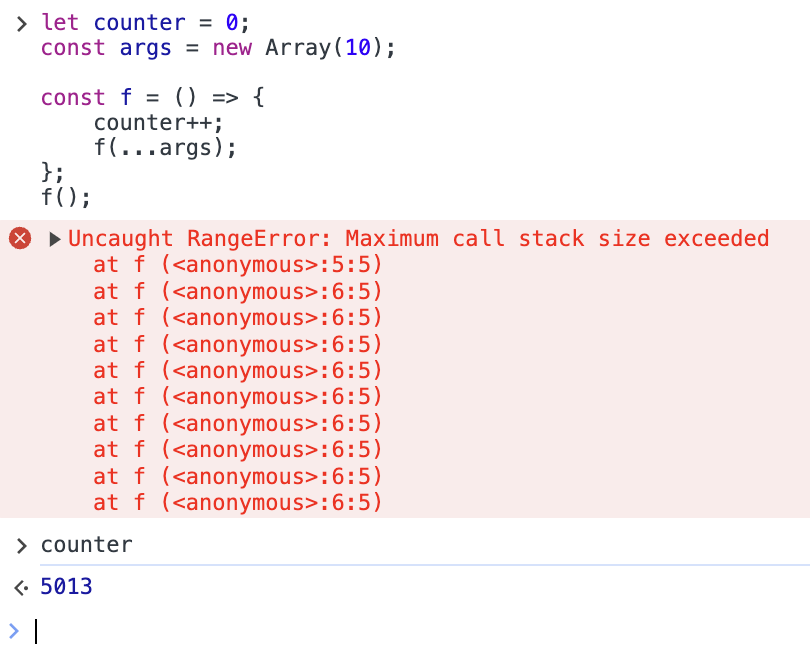

"Maximum call stack size exceeded" というエラーに関する解説を書きます。JavaScript を前提に解説しております。
ざっくり解説
Uncaught RangeError: Maximum call stack size exceeded
これは、関数が何度も深く深く呼ばれてしまった場合に出るエラーです。
大抵は、間違って自分自身の関数を呼んでしまった、もしくは再帰の終了条件をミスった場合に発生します。 ここに検索で来た方は、自分自身を呼んでいたり、関数同士が循環的に呼びあっていたりするミスを犯していないか確認してください 。
図にすると、こんな感じです
ちなみに、関数呼び出しがなければこのエラーは発生しません。ただの無限ループでは決して発生しないエラーです。以下、解説を書きます。
「関数を深く呼ぶ」とは？
ここでは、関数からリターンせず再度関数を呼び、その呼ばれた関数がさらに別の関数を呼び、その関数がさらに別の関数を…と、どの関数もリターンすることなく次々に関数を呼ばれる状態を「深く呼ぶ」と表現しています。
例えば次のようなコードがあった場合を想像してみてください。
const f1 = () => { f2(); };
const f2 = () => { f3(); };
const f3 = () => { f4(); };
const f4 = () => { f5(); };
// ...
このように、呼ばれた関数が次々に関数を呼んでいっている状態です。この場合 DevTools でパフォーマンスを確認すると、イメージとしてはこんな感じになります（実際の結果とは違います）。
f1 の下に f2 があり、f2 の下に f3 があり…と、どんどん深く下に潜って言っているのがわかると思います。この例では、f30 まで呼ばれたらまた戻ってきています。「関数を深く呼ぶ」をイメージして頂けたでしょうか？
この例では関数 f1、f2、f3、…と別々の関数を呼んでいるのですが、同じ関数で再帰することでも関数は深く呼ばれます。次のようなコードを想像してください。
const f = () => { f(); };
これは、関数 f がひたすら関数 f を呼びますので、動作としては無限ループと同じものになります。この場合 DevTools でパフォーマンスを確認すると、イメージとしてはこんな感じになります（実際の結果とは違います）。
このようにどこまでも深く呼ばれ続けていきます。実際にブラウザ等で実行すると、一定の深さになったタイミングで Maximum call stack size exceeded エラーで止まるので、無限ループにはなりません。
循環して呼び出している場合は、次のようなイメージになります。
const f = () => { g(); };
const g = () => { f(); };
この場合も、ある程度まで深く呼ばれた時点で Maximum call stack size exceeded エラーで止まります。
Maximum call stack size exceeded はどんな場合に起こる？
Maximum call stack size exceeded エラーは「関数が何度も深く深く呼ばれてしまった場合に出るエラー」です。関数をたくさん呼び出しても、深く呼ばない限り出ません。
例えば次のコードを見てみましょう。再帰でフィボナッチ数列の n 番目の要素を求めるプログラムです。
let count = 0, max = 0;
const fib = (n, depth = 1) => {
count++;
max = Math.max(max, depth);
if (n === 0) { return 1; };
if (n === 1) { return 1; };
return fib(n - 1, depth + 1) + fib(n - 2, depth + 1);
};
fib(30);
console.log({count, max});
これを実行すると、 {count: 2692537, max: 30} という出力が得られます。 fib 関数は 269 万回も呼ばれましたが、関数の深さは最大で 30 でした。30 であれば Uncaught RangeError: Maximum call stack size exceeded エラーはまず起こらないです。
では、次のコードを見てみましょう。再帰で 0 から n までの数列の和を求めるプログラムです。
let count = 0, max = 0;
const sum = (n, depth = 1) => {
count++;
max = Math.max(max, depth);
if(n === 0) { return 0; }
return sum(n - 1, depth + 1) + n;
};
sum(100000);
これを実行すると、私の環境では Uncaught RangeError: Maximum call stack size exceeded エラーが発生しました。その時の count と max の値は、 {count: 6893, max: 6892} でした。呼び出し回数はたった 6893 回と fib に比べて圧倒的に少ないですが、関数の呼ばれた深さが 6892 と深いために、このエラーが発生してしまったのです。
コールスタックとは？
“Maximum call stack size exceeded” を直訳すると、「コールスタックの最大値を超えました」となります。さて、コールスタックとはなんでしょうか？
プログラムは実行中、大抵たくさん関数を呼び出します。ある関数の途中から別の関数を呼び出した場合、その呼び出し先の関数の処理が終わったら、呼び出し元の場所に制御が戻ってきます。これを内部で管理するために、JavaScript エンジンが内部で使っているのが「コールスタック」です。
JavaScript エンジンは、関数が呼ばれると、今の関数の戻る場所や現在の変数の状態などの情報を、まとめてコールスタックに積みます。そして、呼び出し先の関数に引き渡す引数情報などもコールスタックに積みます。これらの情報をまとめて「スタックフレーム」と呼びます。呼び出し先の関数は、コールスタックを利用して引数情報を参照したりします。呼び出し先の関数からリターンすると、先程積んだ情報（スタックフレーム）をスタックからポップし、元の関数に制御を戻します。
同じ関数を呼び出す「再帰」は、コールスタックで実現されます。再帰で関数を呼ぶたびに新しい引数を含むスタックフレームをコールスタックに積むことで、同じ関数であっても何度でも呼び出せるようになっているのです。
このスタックのサイズは、あらかじめ大抵のプログラムの実行には十分な大きさが確保されており、足りなくなりことはまずありません。しかし、バグなどで関数からリターンされることなく関数が呼ばれ続けると、コールスタックのサイズが足りなくなり、オーバーフローを起こします。いわゆる「Stack Overflow」と呼ばれるのがこの状態です。その時に出てくるエラーが、今回の "Maximum call stack size exceeded" です。
コールスタックは固定長
「コールスタックが足りなくなったら、スタックサイズを拡張すればいいのでは？」と思う方もいらっしゃるかもしれません。おっしゃるとおりです。しかし、実際の実装ではほぼ固定長となっております。
- コールスタックは最初から十分な大きさが確保されている
- それにも関わらずコールスタックを使い尽くす場合、たいていはバグであり、そこで終了するのが望ましい
という理由が考えられます。関数呼び出しは言語の基本機能であり、速度に大きな影響を与える要因になるので、それほど意味もないのに可変長の実装などしないほうが良いでしょう。
コールスタックはスタック領域に確保される
一般的に、プログラムの実行環境にはヒープ領域とスタック領域の 2 つのメモリ領域があります。
プログラム中でメモリを確保する場合、大抵の場合は「ヒープ領域」からメモリが確保されます。例えば
cosnt a = new Array(10000);
などとやると、ヒープ領域から配列の領域が確保されることになります。
一方で、スタック領域は、大抵の場合、関数の呼び出し時にのみ使われる領域です。関数の実行に必要な引数やローカル変数などのメモリを自動的に確保し、関数のリターンに伴って自動的に解放します。ヒープ領域に比べると、スタック領域は小さいです。スタック領域の存在を JavaScript プログラマが意識する必要は、普段はほとんどありません。また、スタックという構造上、メモリの確保・解放が高速です。
コールスタックは仕様にない
コールスタックは、JavaScript の仕様（ECMAScript の仕様）に書かれていません。あくまで JavaScript エンジンの内部仕様です。
仕様にないので、出てくるエラーもブラウザによってまちまちです。Chrome や Safari は RangeError を出しますが、Firefox は InternalError を出します。当然ながら各ブラウザでスタックサイズも大きく違います。
仕様にないので、コールスタックの状態確認も原則出来ません。そもそもコールスタックを持たない JavaScript 実装があってもおかしくないので、状態確認をするような標準関数もありません。Error オブジェクトの stack プロパティからコールスタックの状況を垣間見ることが出来るのですが、そもそもこのプロパティはブラウザの独自拡張であり、仕様にはありません。
（なお、このプロパティを標準化する提案が TC39 に出ておりますが、2017 年に提案されて未だ Stage1 のようなので、実現までの道のりは遠そうです。標準化の話は @petamoriken さんに教えていただきました。いつもありがとうございます！）
しかし現実として、世の中に存在する全ての JavaScript エンジンはコールスタックを利用しています、と言い切っても許されるのではないかと思うほど、コールスタックの存在は当たり前です。JavaScript に限らず、他の言語における実装でも一般的な概念ですので、知っておくことに大きな価値があります。
コールスタックは機械語で威力を発揮する
そもそも機械語が、コールスタックを前提にした設計になっています。例えば x86 だと SP（スタックポインタ）と呼ばれるレジスタがあり、コールスタックが効率的に実装出来るようになっています。
JavaScript は JIT で機械語が生成され、それが実行されるようになります。そこで、機械語による効率的なコールスタックの実装が可能になり、関数呼び出しという言語のコア機能に関して高速な実行が期待出来るようになります。興味のある方は、V8 における実装の詳細な説明などを参考にしてみてください。
実験
ではまず、故意に Stack Overflow を起こしてみましょう。
let counter = 0;
const f = () => {
counter++;
f();
};
f();
この関数は、無限に f を呼び続けます。Chrome で実行すると次のような結果になりました。
関数からリターンすることなく関数を呼び続けているため、コールスタックを使い尽くしてエラーを出しました。エラーを出すまでの間、11029 回関数が呼ばれたようです。
では、この 11029 回という結果に対して、何をすれば回数が減っていくのか確認していきましょう。
引数を増やす
上の説明で、「引数情報などもコールスタックに積みます」と書きました。実際、引数やローカル変数が増えると、その分スタックに積まれる情報量が増えるため、スタックを多く消費します。実験してみましょう。
let counter = 0;
const args = new Array(10);
const f = () => {
counter++;
f(...args);
};
f();
このコードは、引数を 10 個用意して f 関数を再帰的に呼んでいます。その引数はプログラム中では全く使われていないのですが、スタックには（最適化で消されない限り）積まれます。

実行してみた結果がこちらです。ご覧の通り、5013 回まで減りました。
ローカル変数を増やす
さて、引数同様、ローカル変数もスタックに乗ることを確認してみましょう。
let counter = 0;
const f = () => {
let r0 = Math.random() * 10;
let r1 = Math.random() * 10;
let r2 = Math.random() * 10;
let r3 = Math.random() * 10;
let r4 = Math.random() * 10;
let r5 = Math.random() * 10;
let r6 = Math.random() * 10;
let r7 = Math.random() * 10;
let r8 = Math.random() * 10;
let r9 = Math.random() * 10;
counter++;
f();
};
f();
最適化で消えないように、無駄に乱数を保存しています。実行結果は次の通りです。
呼び出し回数は 5012 回でした。なお、ローカル変数の数を半分の 5 個まで減らしたら、6892 回の呼び出しが出来ました
大体 5000 の深さくらいは関数を呼べるの？
必ずしもそうとも限りません 。ブラウザの実装に左右されますが、スタック領域に大量のデータを置く実装が無いわけでもないです。
わかりやすい例を出してみましょう。
let counter = 0;
const args = new Array(10000);
const f = () => {
counter++;
f(...args);
};
f();
極端ですが、10000 個の引数を呼ぶ関数です。実行結果はこちらです。
なんとわずか 12 回しか呼べませんでした。さすがに 10000 もの引数を持つ関数はない、と思われるかも知れませんが、一昔前の JavaScript では比較的よく使われるテクニックだったりするので油断できません。
String.fromCharCode(72, 101, 108, 108, 111, 44, 32, 119, 111, 114, 108, 100, 33);
// "Hello, world!"
String.fromCharCode は、引数で複数の文字コードを与えると、一括で文字列に変換してくれます。なので配列にある charCode を一括で文字列に変換したい場合は、このようなコードを書く必要がありました。このコードは大量のスタック領域を消費する可能性があり、ネストの深い関数で呼ばれた時に Stack Overflow が起こる可能性は否定できません。
例えば Pex という 2011 年当時に作成された Flash Player では、このようなコードがありました。このコードでは分割して処理していますが、そうしなかった場合、引数の数は数千個は当然、下手すれば十万個を超える場合すらあります。TypedArray などが整備された現在このようなコードを新規で書くことはないでしょうが、頭の片隅においておくと良いかも知れません。
なお、これを利用すると 1 つの関数呼び出しのみで Maximum call stack size exceeded を引き起こせます（gfx さんに教えてもらいました、ありがとうございます！）
String.fromCharCode(...new Array(1000000).fill(97));

まとめ
"Maximum call stack size exceeded"というエラーは、関数を深く深く呼びすぎた場合に起こる- 大抵は、自分自身を呼び出す再帰の終了条件のミスか、関数を循環的に呼んでしまうミスのどちらか
- しかし、きちんとした終了条件の存在する再帰処理の場合でも、深く呼びすぎた場合には発生する
- JavaScript エンジンの実装で起こる問題であり、JavaScript の仕様では定義されていない
- 大抵は 5000 くらいの深さまでは呼べるのだけれど、条件によっては 10 程度の深さで起こることもあり得る
特に JavaScript の場合は、ユーザーの端末によって実装がバラバラであり、スタックサイズも一定ではありません。それが原因で、特定のごく小数のユーザーのみで問題が起こるバグとなることもあります。
個人的な意見ではありますが、JavaScript ではスタックサイズが読めないので、そもそも JavaScript では極力再帰を使わずにコードを書くのをお勧めしたいところです。どうしても再帰が必要な場面では、自前でスタックを用意して、ヒープ領域をつかって再帰と同等の処理を書くことをお勧めします。例えば拙作のニコニコプログラミングの迷路回でも、同じ懸念から私は再帰を使わずに、自前でスタックを用意して処理を書いておりました。6 分 40 秒あたりです。
gfx さんも、同じようなことを言っていました
JavaScriptのコールスタックは環境によって違いがある上にまったく読めないので、ぼくはブラウザ用のJSコードでは絶対に再帰は書きませんね…。昔treeのtraverseのために再帰したら、かなり浅い再帰のはずなのに特定の環境で稀にMaximum call stack size exceededで死んでループで書き直したことがあります。
おまけ: それでもブラウザで深い再帰をしたい場合
C などの場合、コンパイラオプションなどでスタック領域のサイズを変更できたりしますが、JavaScript では基本的にスタックサイズを変更することは出来ません。どうしても再帰を使いたい、しかしスタックサイズを超えてしまう、とはいえ書き直すのは面倒くさい（？）、みたいな状況に陥った時に使える裏技がありますのでご紹介します。
上でも書いた、このコードを元に説明しましょう。
let count = 0;
const sum = (n) => {
count++;
if(n === 0) { return 0; }
return sum(n - 1) + n;
};
console.log(sum(100000));
再帰を無駄に使って 0 から n までの数列の和を求めるプログラムです。 10 万まで求めようとしているので、大抵の JavaScript 実装では Stack Overflow が起こってしまいます。完全に余談ですが、C 言語であれば 10 万回くらいであればコンパイラのデフォルト設定でも耐えられる印象を持っています。
これを、次のように書き換えます。
let count = 0;
const sum = async (n) => {
count++;
if(n === 0) { return 0; }
try {
return await sum(n - 1) + n;
} catch(e) {
await Promise.resolve();
return await sum(n - 1) + n;
}
};
console.log(await sum(100000));
簡単にいうと、例外が発生した場合に、一旦 await Promise.resolve() を呼び出すことで現在の実行コンテキストを強制的に終了し、一時的に返値を pending 状態の Promise にします。次の実行コンテキストに移った際にはスタックが空になっているので、そこから再帰の続きが可能になります。
この方法は完全に邪道です。そもそも Stack Overflow の時に例外が投げられる仕様はありませんし、 Promise.resolve() の呼び出し時に再度例外が起こってもおかしくないです（もっともこのコードの場合、それでもおそらく動いちゃうのですが）。上記コードの場合、投げられた例外は全部拾ってしまうのですが、どのような例外が投げられるのかはブラウザ依存なので、このようなやり方にせざるを得ません。例外の message もブラウザで違います（Firefox の場合は InternalError: too much recursion となります）。
ただ一方で、合法なプログラムでもあるので、こういう逃げ方が出来る、ということを覚えておくと、ちょっとした計算をさせている時などに役に立つかもしれないですね。プロダクションなど大事なプログラムでは、このようなコードは書かないことを強く勧めます。
追記: 末尾再帰について
はてブのコメントで指摘されたので、末尾再帰についても書いておきます。
末尾再帰（Wikipedia のリンク）と呼ばれる、関数の最後で再帰が呼ばれるパターンについては、機械的にループに置き換えられることが知られています。ループに変換してしまえば、Stack Overflow は起こり得ません。一部の処理系では言語仕様レベルで導入されています。
JavaScript では、過去に言語レベルで末尾再帰をループに変換する仕様が議論されたことがあったようですが、残念ながら今のところ実現されていないようです。
@kota_yata さんが素晴らしい資料を用意されているので、興味のある方は是非ご一読ください。このスライドは、 @h_sakurai さんに情報をいただきました！ありがとうございます！